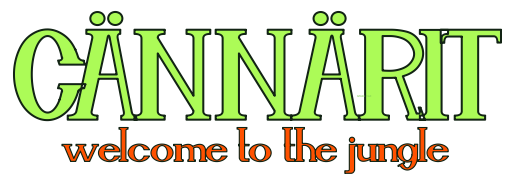
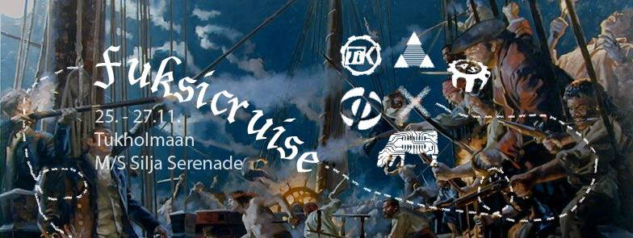

Waarin viikkotiedote 6 - tarttukaa ruoriin
06.10.2015 fuksit / viikkotiedote / cännärit / fuksicruise / lenskin dynamo /
Hiiohoi!
Morjes!
Olipa syyskuun lopetuksessa meininkiä. Lakinlaskijaiset oli yllätyksekseni älyttömän hauskat baarijuhlat, ja Anssi Kela kyllä kruunasi illan.
Hienoa on ollut myös nähdä teidän päällä vihdoin upouudet, hienot brodeeratut haalarit päällä! :) Ja huhhuh, meidän ajokki oli Otatarhan ajoissa melkoinen ilmestys! En ole oikeasti ennen nähnyt sitsejä pyörillä, joten jo siitä huikea plussa, että saatiin se onnistumaan. Oltais me varmaan se voitettukin jollei pyörät olisi sulaneet asfalttia vasten. :D Haluun vielä kiittää kaikkia ajokin rakentamiseen osallistuneita, huikeaa duunia! :)
Alla vielä kuva tästä meiningistä!

Tässä postauksessa on kolme supertärkeää asiaa:
CÄNNÄRIT
ja
FUKSICRUISE
ja...
Mä?
Lue nuo kolme juttua heti tästä ekana, sen jälkeen tapahtumalistaus kaikista teille suunnatuista tapahtumista. :) Lukekaa huolella läpi!
P.S. jos tapahtumat eivät riitä ja opiskelu sujuu, AYY:n kalenterista löytää lisää meininkiä: http://ayy.fi/kalenteri/
<3 ultsi
Sisällysluettelo
- Tärkeää
- CÄNNÄRIT
- FUKSICRUISE
- Uusi TosiTV-sarja: Fuksiwaari Kroatiassa
- Fuksi- ja kiltatapahtumat
- Kiltahuoneremppa to 8.10
- ILMO: Taistelu Otaniemen herruudesta 12.10.
- ILMO: Viininmaistelu
- ILMO: Amazing race - Aalto edition
- AYY
- Esittele Aaltoa lukioissa!
- TF-disco 17.10
- Lopetus
TÄRKEÄÄ
1. Cännärit
 Cännärit laitettiin eilen käyntiin, ja nyt on Pääjärkkäri, sihteeri sekä rahis jo valittuna! Onnittelut siis Ilmari Tarpiselle, Riku Laukkaselle sekä Aatos Saariselle!
Cännärit ovat fuksien, eli juuri teidän ikiomat bileet, jossa te saatte täysin päättää millaiset bileet järkkäätte. Olin itse omana vuonna mukana järkkäämässä ja siitä jäi sellainen kaveriporukka mukaan, jonka kanssa olen itsekin nyt kolme vuotta opiskeluja suorittanut. Sekä roima muistoja jutuista, joita teki bileiden eteen.
Tässä on vielä sihteeriltänne viesti, kuinka päästä mukaan Cännäreitä järjestämään. :)
Tervetuloa tekemään Cännäreitä meidän kanssamme! Päätimme ensimmäisessä kokouksessamme jo teeman ja osan vastuuhenkilöistä, mutta osaavia käsiä tarvitaan aina! Tässä linkki TG-ryhmäämme, josta pääset toimintaan kiinni! https://telegram.me/joinchat/Bht6ZQIE0OxhPmaGIjliWA
-Riku Laukkanen, Sihteeri
Mukaan vaan siis ehdottomasti! :)
2. FUKSICRUISE

Yarrr!
Fuksicruise tulee taas ja M/S Silja Serenade täyttyy toinen toistaan hurjemmista merirosvoista! Rosvojoukko kootaan AS:n, FK:n, Inkubion, MK:n ja TiK:n viekkaimmista ja pelottomimmista fukseista. Paatin keula suunnataan kohti läntisen naapurimme koreaa pääkaupunkia keskiviikkona 25.11.
Pukeudu haalareidesi lisäksi seikkailuun sopivalla tavalla ja nouse kanssamme kannelle! Menomatkalla retken kohteeseen pääset virittäytymään tunnelmaan ja hiomaan merirosvon vaistojasi eeppisessä hyttisuunnistuksessa! Tukholmassa vierailemme hengenheimolaistemme luona Kungliga Tekniska Högskolanilla ja hämmennämme paikallisia maakrapuja ympäri kaupunkia.
Cruiselta palataan mahdollisen ryöstösaaliin kanssa perjantaina 27.11. Reissu kustantaa 40 euroa, sisältäen paikan neljän hengen B-hytissä sekä aamiaisen laivalla Tukholmaan saavuttaessa. Ilmoittautuminen vain ja ainoastaan FUKSEILLE avautuu osoitteessa http://fuksicruise.dy.fi/ sunnuntaina 11.10. kello 14.00 ja päättyy 27.10. kello 23.59. Kokoa mieluisesi neljän (4) hengen hyttiporukka etukäteen, sillä ilmomasiinassa voit ilmoittautua hyteittäin. Voit ilmoittautua myös ilman hyttiporukkaa, jolloin järjestäjät osoittavat sinulle paikan hytistä, jossa on vielä tilaa. Vanhemmat merille pyrkijät varaavat risteilynsä omatoimisesti.
Liity siis miehistöömme ja kohtaa syksyn jännittävin ja huikein meriseikkailu kohti tuntemattomia maita! Ilmosivulta http://fuksicruise.dy.fi/ löydät myös matkan ohjelman sekä aikataulun ja maksuohjeet. Lue ne huolella!
“Jos merirosvon vasen jalka on puujalka, on oikea jalka oikea jalka.”
tl;dr
Mitä? Fuksicruise
Kenelle? AS, FK, Inkubio, MK sekä TiK -fuksit. Vanhemmat ryökäleet ovat myös tervetulleita, mutta varaavat risteilynsä omatoimisesti.
Milloin? Lähtö M/S Silja Serenadella ke 25.11. kello 17. Paluu pe 27.11.
Mitä maksaa? 40 e per matruusi.
Miten mukaan? Ilmoittaudu hyttiporukkasi kanssa tai ilman osoitteessa http://fuksicruise.dy.fi/ sunnuntaina 11.10 kello 14.00 alkaen.
3. Uusi TosiTV-sarja: Fuksiwaari Kroatiassa
Oispa kyllä hyvä tv-sarja.
Lähden huomenna siis Dominanten kanssa harjoittelemaan juhlakonserttia varten Kroatian lämpöön 10 päiväksi! Eli ei nähdä nyt yli viikkoon. :'( Minuun kuitenkin pitäisi saada yhteys päivittäin(onneks hotellissa on WiFi), joten verkosta en kauas katoa. Luotan killan fuksiuden nyt kokonaan teidän haltuun, ruori on teidän nyt vähän aikaa!
Blogittelen sieltä lämpimästä minkä kerkeän ja hoidan teidän juttuja kuntoon etänä. Ja otan ehkä myös vähän rennosti. :)
Fuksi- ja kiltatapahtumat
1. Kiltahuoneremppa torstaina klo 16:00!
Kiltahuone on laajentunut, ja laajenemisen myötä on uusia mahdollisuuksia toteuttaa uusia juttuja!
Kiltahuoneelle pallomeri!? Ideahautomo?!? Fatboylounge?!!? Lisää sohvia?!!
Tule mukaan mouhoamaan kiltahuoneen uudesta ilmeestä!
Killan sivuilla: http://tietokilta.fi/tapahtumat/821
2. ILMO: Taistelu Otaniemen herruudesta 12.10.
Taistelu Otaniemen herruudesta tulee taas! Viimevuotisen kuplafutiksen jälkeen palataan perinteisempään lajiin: Liikuntatoimikunta järjestää kyykkäturnauksen, joka on suunnattu kaikille aaltolaisille. Kokoa joukkueesi ja ilmoittaudu mukaan taistoon! Turnauksen FB-event löytyy osoitteesta https://www.facebook.com/events/1663421017268513/.
Turnaus käydään Alvarin aukiolla 12.10.2015, ja palkintona on maineen ja kunnian lisäksi mahdollisuus edustaa koko Otaniemeä akateemisen kyykän MM-kilpailuissa Hervannassa 13.2.2016. Voittajajoukkueelle sponsoroidaan MM-kilpailun osallistumismaksu!
Turnauskaavio muodostetaan ilmoittautumisten mukaan, joten ilmoittaudu nopeasti varmistaaksesi paikan turnauksessa! Pelit aloitetaan noin kello 14, riippuen joukkueiden määrästä ja aikataulutoiveista. Jokaiselle joukkueelle pyritään takaamaan ainakin kaksi kamppailua.
Kyykkä on heittolaji, jota pelataan nelihenkisillä joukkueilla. Osallistumiseen ei tarvita minkäänlaista ennakko-osaamista, sillä laji perustuu kaikentasoiseen hauskanpitoon ja on nopea oppia! Lisää voit lukea osoitteessa www.kyykka.fi.
Ilmoittautuminen on nyt auki ja tapahtuu osoitteessa https://lomake.ayy.fi/aava/taistelu-otaniemen-herruudesta-2015/. Ilmoittautuminen suljetaan viimeistään 8.10.2015. Joukkueen osallistumismaksu on 4 €.
3. ILMO: Viininmaistelu
Hei kiltalainen! Haluatko saada tekosyyn juoda keskellä viikkoa ja samalla kokea paremmuuden tunnetta vertaisiisi? Älä katso pidemmälle, sillä 14.10. klo 18:00 on tietokillan viininmaistajaiset! Luvassa on erinäisten viinten maistelua ja hyvää meininkiä. Arvioimme yhdessä viinejä ja saamme kosketuksen viinten ihmeelliseen maailmaan. Tule mukaan! Maistelu kustantaa 10e, joka maksetaan käteisellä paikanpäällä.
Mitä: Viininmaistelu
Missä: Kiltahuoneella
Milloin: 14.10. klo 18:00
Hinta: 10e
Ilmoittautumiseen: http://tietokilta.fi/tapahtumat/824
4. ILMO: Amazing race - Aalto edition
Fuksi/Mursu!
Oletko koko syksyn koettanut löytää tilaisuutta päästä bondailemaan muidenkin kuin oman järjestösi/kiltasi uusien opiskelijoiden kanssa? Nyt sinulla on tilaisuus yhdistää unelmasi ja aaltohenkesi! Lähde mukaan Aavan, Kulttuurivaliokunnan ja Teekkarijaoston masteroimalle seikkailulle, joka vie sinut toiselle puolelle maailmaa (tai vähintäänkin naapurikaupunkiin) muiden yliopistosi ensimmäisen vuoden opiskelijoiden kanssa!
Seikkailu alkaa torstaina 15.10. klo 16 Otakaari 18 A -kerhotilasta, jossa ryhmät saavat ensimmäisen tehtävänsä sekä vihjeen, joka johtaa seuraavan tehtävän luo. Kierros päättyy KY-talolle, jossa palkitaan parhaiten suoriutunut joukkue, ja KY:ltä ilta jatkuu vielä myöhemmin julkistettavaan jatkopaikkaan.
Mitä: Amazing Race - Aalto Edition
Milloin: 15.10 klo 16 →
Missä: Lähtö OK18 kerhotila, päätepiste KY-talo
Mitä maksaa: ei mitään!
Miten mukaan: ilmoittaudu! Ilmon deadline 13.10. https://lomake.ayy.fi/aava/such-amazing-race-aalto/
Miksi: Koska Aalto ja Amazing Race!
Lisätietoa FB-tapahtumasta: https://www.facebook.com/events/567017586771789/
AYY
1. Esittele Aaltoa lukioissa!
Joka lukuvuosi Aalto-yliopiston opiskelijat kiertävät lukioissa, messuilla ja varuskunnissa kertomassa yliopisto-opiskelusta mahdollisille tuleville fukseille ja mursuille. Hakijapalvelut järjestää kaikille abimarkkinoinnista ja lukiovierailuista kiinnostuneille infoilijakoulutuksen. Koulutuksen käyneet opiskelijat saavat korvauksen pitämistään infoista, ja heille korvataan tietyin ehdoin myös matkat lukioon ja takaisin.
Koulutuksessa käydään läpi perustiedot kaikista Aalto-yliopiston korkeakouluista ja perusteet Aallon hakumenettelyistä. Myöskään itse esiintymistä ei ole unohdettu, sillä paikalla on vieraileva esiintymistaitokouluttaja!
Koulutukset järjestetään Otaniemen kampuksella, Otakaari 1:ssä lokakuussa, ja koulutukset on painotettu hieman eri tavalla koulutusalan perusteella:
5.10. Teknik (På svenska) klo 14–17.30
13.10. Tekniikka klo 14 - 17
14.10. Kauppatieteet klo 15 - 18
15.10. Tekniikka klo 14 - 17
Lisätietoa koulutuksista sekä ilmoittautumislomake löytyvät abimarkkinoinnin Into-sivulta: https://into.aalto.fi/display/fiaalto/Abimarkkinointi.
Waarin kommentti: Olen itse käynyt jo kaksi kertaa omassa lukiossa esittelemässä Aalto-yliopistoa, ja se on ollut hauskaa hommaa (sekä matkat sai ilmaiseksi!) Kannattaa siis lähteä, helpottaa ainakin pitemmältä tulleille kotona käymistä. :)
2. TF-disco 17.10.
Päästä irti sisäinen diskohemmosi kun TF:n osakuntatalo muuttuu illaksi 70-luvun diskoksi!
Täffällä oli aikoinaan Suomen ensimmäinen disko. Tule muistelemaan - taikka ensi kertaa kokemaan - tuo paljettien, diskotanssin ja leveiden lahkeiden aikaa.
MITÄ? TF-DISCO!!!
MISSÄ? Otakaari 22
MILLOIN? 17.10, ovet aukeaa 21:00
HINTA? 5€ ennakko/7€ ovelta
Lipunmyyntipisteet ja -ajankohdat ovat:
TF: 7.10 ja 14.10 kello 11-16
Päärakennus: 8-9.10, 12-13.10 ja 15-16.10 kello 11-16
FB: https://www.facebook.com/events/1077003565643943/
Lopetus
Muistakaa et minuun saa aina ottaa yhteyttä vaikka "lomailenkin"! Nähdään netissä!
<3 ultsi